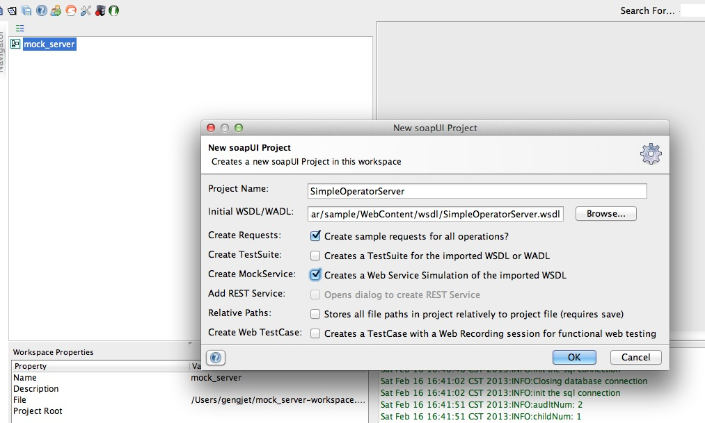

如何查看进程打开的文件
今天有个同事问我如何查看某个进程打开了那些文件。说是在的我也不知道。所以简单的Google了一下。发现一些方法，真的很好用。特记录如下！
首先要做的是找到相应的pid。 我们使用
ps -aef | grep {programe-name} ps -aef | grep
下面可以通过pfiles命令来查看：
$ pfiles {PID} $ pfiles 3533
不过pfiles在Mac OSX上默认没有安装。 不过可以通过lsof 来完成。
lsof -p {PID}
输出的样例如下：
firefox 547 xxxx txt REG 14,2 53776 16394158 /Applications/Firefox.app/Contents/MacOS/firefox
firefox 547 xxxx txt REG 14,2 63712 888627 /System/Library/Frameworks/ExceptionHandling.framework/Versions/A/ExceptionHandling
firefox 547 xxxx txt REG 14,2 115792 16394163 /Applications/Firefox.app/Contents/MacOS/libmozglue.dylib
firefox 547 xxxx txt REG 14,2 416260 16394166 /Applications/Firefox.app/Contents/MacOS/libnspr4.dylib
firefox 547 xxxx txt REG 14,2 48140 16394174 /Applications/Firefox.app/Contents/MacOS/libplc4.dylib
firefox 547 xxxx txt REG 14,2 43220 16394175 /Applications/Firefox.app/Contents/MacOS/libplds4.dylib
firefox 547 xxxx txt REG 14,2 269952 16394173 /Applications/Firefox.app/Contents/MacOS/libnssutil3.dylib
firefox 547 xxxx txt REG 14,2 25820 16394162 /Applications/Firefox.app/Contents/MacOS/libmozalloc.dylib
firefox 547 xxxx txt REG 14,2 41328 16394181 /Applications/Firefox.app/Contents/MacOS/libxpcom.dylib
firefox 547 xxxx txt REG 14,2 2040008 16394168 /Applications/Firefox.app/Contents/MacOS/libnss3.dylib
firefox 547 xxxx txt REG 14,2 304076 16394177 /Applications/Firefox.app/Contents/MacOS/libsmime3.dylib
firefox 547 xxxx txt REG 14,2 459504 16394180 /Applications/Firefox.app/Contents/MacOS/libssl3.dylib
firefox 547 xxxx txt REG 14,2 1732832 16394165 /Applications/Firefox.app/Contents/MacOS/libmozsqlite3.dylib
用SoapUI mock Web服务
最近工作大量使用三方的Web Service（以下简称WS）。三方的WS时好时坏。让人很是郁闷，所以就动了自己按照三方提供的wsdl自己实现同样接口的WS。其实这就是Mock。 简单google了一下发现 SoapUI 已经具有这样的功能，而且很容易上手。毫不犹豫的用起来。
创建动态的WS mock
我们的目标是根据一个wsdl文件创建一个WS mock。WS client可以方法这个WS mock，并且能产生动态的相应。 在开始前我们需要如下材料：
- JDK， 建议使用1.5向上版本。
- SoapUI 4.5.1版本
- 一个wsdl文件。我使用的wsdl文件在
好了，准备好上述的内容我们就开始创建WS mock。 首先打开SoapUI。 通过File菜单中的new project新建一个项目。
